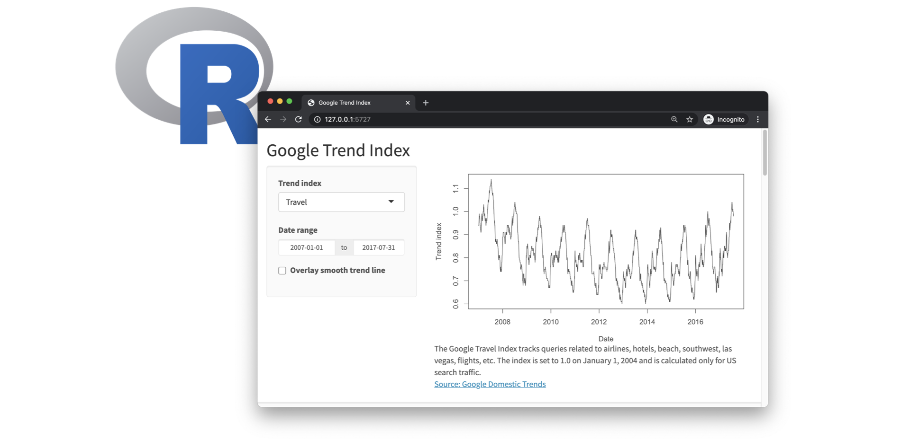
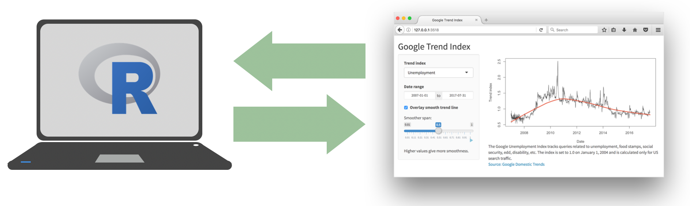
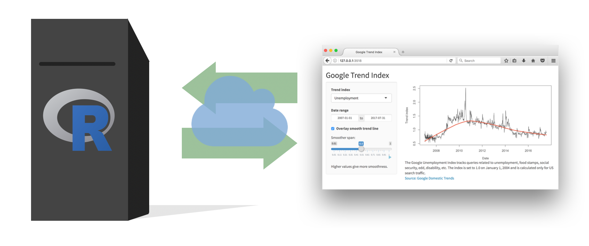
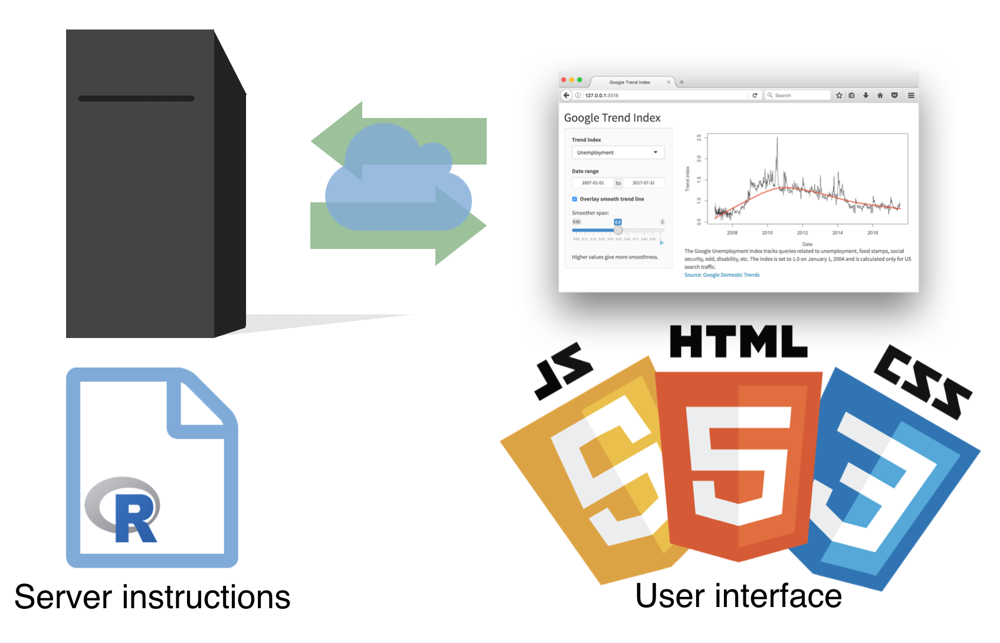
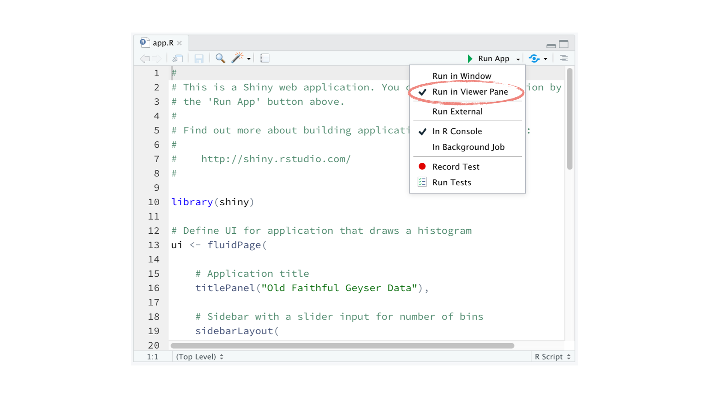
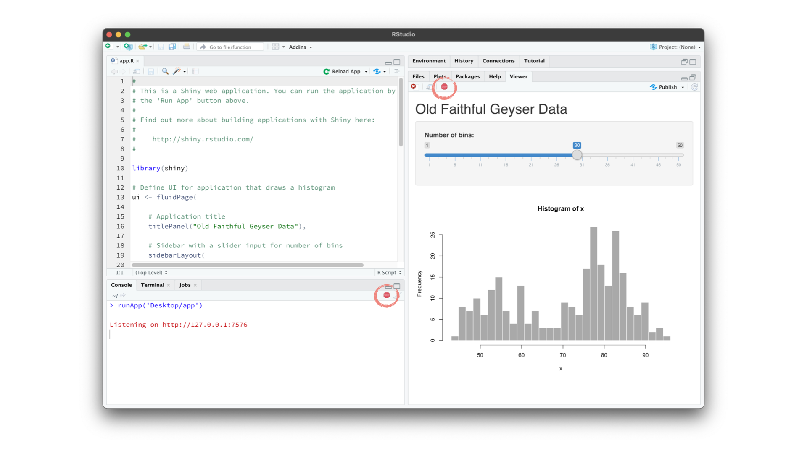

4 Recap
Let’s quickly recap what we have learned in this chapter.
4.0.1
Every Shiny app has a webpage that the user visits, and behind this webpage there is a computer that serves this webpage by running R.
4.0.2
When running your app locally, the computer serving your app is your computer.

4.0.3
When your app is deployed, the computer serving your app is a web server.

4.0.4
Each app is comprised of two components, a UI and a server.

The UI is ultimately built with HTML, CSS, and JavaScript. However, you as the Shiny developer do not need to know these languages. Shiny lets R users write user interfaces using a simple, familiar-looking API. However there are no limits to customization for advanced users who are familiar with these languages.
The server function contains the instructions to map user inputs to outputs.
I often think of the UI as containing syntax specific to Shiny, and the server as containing R code you might already be familiar with – with some Shiny functions added to achieve reactivity.
4.0.5 Tip: Change display
In this tutorial you will be developing your apps in RStudio Cloud projects, but once you’re done with the tutorial you might consider developing your apps in the RStudio IDE, which has some some handy-dandy functionality for running and viewing your apps.
RStudio will automatically recognize R scripts that contain ui and server components and that end with a call to the shinyApp() function and will make available the Run App button. You can choose to run your app in a new window, or in the viewer pane of your RStudio window.

4.0.6 Tip: Close an app
When you are done with an app, you can terminate the session by clicking the red stop button in your viewer pane.

4.0.7
That’s all for this module! In the next module we discuss inputs, outputs, and rendering functions in further detail.